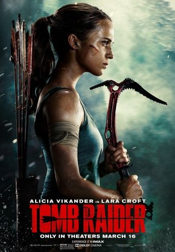

Розкрадачка гробниць: Лара Крофт

- Назва: Розкрадачка гробниць: Лара Крофт / Tomb Raider: Lara Kroft
- Режисер: Роар Утхауг
- Актори: Алісія Вікандер, Волтон Гоггінс, Деніел Ву, Домінік Вест, Ханна Джон-Кеймен, Крістін Скотт-Томас, Нік Фрост, Емілі Кері, Майкл Обіора, Антоніо Аакіл
- Студія: Metro-Goldwyn-Mayer, Warner Bros. Pictures, GK Films
- Бюджет: 94 млн. дол. США
- Прем’єра: 02.03.2018
- Тривалість: 118 хв
Опис:
Коли юна Лара Крофт була ще зовсім підлітком, її ексцентричний батько відправився в неймовірно небезпечну експедицію в пошуках пригод. І не повернувся. Дівчинці залишилася його дуже прибуткова багатомільйонна імперія, але Лара хоче створювати свою історію, а не жити на спадщину батька. Тепер уже 21-річна дівчина працює кур'єром, розвозячи посилки на своєму байці Лондоном. Цього їй вистачає, щоб зводити кінці з кінцями. Але ось випадковість приводить Крофт до таємного притулку батька. Там вона більше дізнається про нього, знаходить його послання. Там говориться про гробницю "Матір смерті" та про якийсь клан "Трійця", який потрібно зупинити. Дівчина готова кинути все, щоб пуститися в цю відчайдушну пригоду та рятувати світ.
Аксель

- Назва: Аксель / A.X.L.
- Режисер: Олівер Дейлі
- Актори: Алекс Нюстадтер, Беккі Джі, Амін Наземзадех, Томас Джейн, Гассі Гаррісон, Тед МакГінлі, Алекс МакНіколл, Доріан Кінгі, Патриція Де Леон, Марі-Франсуа Теодор
- Студія: Lakeshore Entertainment
- Прем’єра: 16.08.2018
- Тривалість: 100 хв
- Назва: Соло: Зорянi вiйни. Iсторiя / Solo: A Star Wars Story
- Режисер: Рон Ховард
- Актори: Олден Еренрайк, Емілія Кларк, Йонас Суотамо, Дональд Ґловер, Вуді Гаррельсон, Тенді Ньютон, Фібі Воллер-Брідж, Пол Беттані, Джон Фавро, Ворвік Девіс
- Студія: Walt Disney Pictures, Imagine Entertainment, Lucasfilm Ltd.
- Прем’єра: 10.05.2018
- Тривалість: 135 хв
Опис:
Аксель – це абсолютно секретний, інноваційний робот у вигляді пса, якого створили для захисту солдатів у майбутньому. Після невдалих експериментів Аксель потрапив на звалище. Там його знайшов підліток-мотоцикліст на ім'я Майлз. Хлопець – одинак, дуже любить кататися пустелею на своєму мотоциклі. Побачивши робота-пса, Майлз вирішує йому допомогти. Разом із цим він активував технологію і прив'язав її до себе. Між хлопцем і псом з'явилася справжня дружба. В Акселя є просунутий інтелект і добре серце, почуття. Але бачачи, як робот розвинувся поруч із хлопцем, творці машини хочуть забрати його собі назад. Майлз ні за що не дасть друга в образу, та й Аксель захищатиме хлопця від усіх бід.
Соло: Зорянi вiйни. Iсторiя
Опис:
У далекій-далекій галактиці, напевно, усі чули про легендарного тисячолітнього "Сокола". Вніс його в історію всесвіту не хто інший, як найспритніший і найшвидший контрабандист на просторах космосу Хан Соло разом зі своїм постійним супутником і помічником Чуї. Їхнє життя повне пригод й авантюр, адже друзі нерідко заглядають у найтемніші та найнебезпечніші місця галактики. На своєму шляху Хану Соло зустрілося і ще зустрінеться чимало людей, але не останнє місце серед них займає відмінний картковий шулер Лендо Капріссіан. Із цього починається історія людини, яка зробить свій внесок у історію галактики.